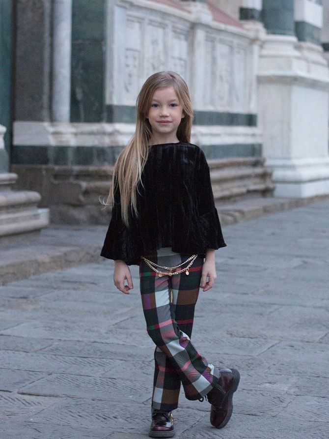

Детские тренды 2019 года
Cтильные идеи для прохладных деньков
Модные образы с брюками для девочек и мальчиков
Брюки – это красиво, стильно, удобно и тепло. Детская мода осень-зима 2019-2020 демонстрирует яркие и нетривиальные девичьи образы с брюками, которые захочет примерить любая юная модница. В этом сезоне стилисты предлагают большой выбор широких моделей, укороченные варианты брюк, а также фасоны с завышенный талией, сборками и резинками. Принты и расцветки – самые разнообразные. От классических черного и бежевого, до камуфляжа, клетки и цветочной тематики.
Верхняя одежда для мальчишек и девчонок: осенние и зимние
У детей и родителей иногда расходятся мнения при выборе верхней одежды на самое холодное время года. Для родителей важно, чтобы ребенок не замерз и не промок в холодную и сырую погоду. А для ребенка часто приоритетней выглядеть модно и стильно. Хорошо, что современная детская мода осень-зима 2019-2020 способна удовлетворить запросы и родителей, и детей.